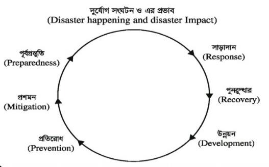

Part 1: প্রামাণ্য ইন্টারেক্টিভ রিভিশন নোট ও সূত্রাবলি
১. বাংলাদেশের ভৌগোলিক অবস্থান, পরিবেশ ও দুর্যোগ প্রশমন
বাংলাদেশ দক্ষিণ এশিয়ার উত্তর-পূর্বাংশে ২০°৩৪´ উত্তর থেকে ২৬°৩৮´ উত্তর অক্ষাংশ এবং ৮৮°০১´ পূর্ব থেকে ৯২°৪১´ পূর্ব দ্রাঘিমাংশের মধ্যে অবস্থিত। কর্কটক্রান্তি রেখা (২৩.৫° উত্তর অক্ষাংশ) বাংলাদেশের ঠিক মধ্যভাগ দিয়ে অতিক্রম করেছে।
প্রাকৃতিক দুর্যোগ
সংগঠিত হওয়ার কারণ
ঐতিহাসিক ঘটনা ও প্রশমন কৌশল
ঘূর্ণিঝড় (Cyclone)
বঙ্গোপসাগরে নিম্নচাপ ও সমুদ্রপৃষ্ঠের তাপমাত্রা ২৭°C অতিক্রম করা
১৯৭০ এর মহাঘূর্ণিঝড়, ১৯৯১ এর ১২ নং সতর্কসংকেতের ঝড়, ২০০৭ এর 'সিডর' ও ২০০৯ এর 'আইলা'। আশ্রয়কেন্দ্র ও সিপিপি (CPP) ভলান্টিয়ার।
ভূমিকম্প (Earthquake)
ভারতীয় ও ইউরেশিয়ান প্লেটের সঞ্চালন ও সাবডাকশন জোন
বাংলাদেশকে ৩টি সিসমিক জোনে ভাগ করা হয়েছে (সবচেয়ে ঝুঁকিপূর্ণ জোন-১: সিলেট ও ময়মনসিংহ)। রিখটার স্কেলে মাত্রা পরিমাপ।
নদীভাঙন ও খরা
জলবায়ু পরিবর্তন, উজানে ফারাক্কা ও তিস্তা বাঁধের প্রভাব
উত্তরবঙ্গে 'মঙ্গা' ও খরা দেখা দেয়। ডেল্টা প্ল্যান ২১০০ (Delta Plan 2100) কার্যকর করা হচ্ছে।
নিচের কোন ভৌগোলিক রেখাটি বাংলাদেশের উপর দিয়ে অতিক্রম করেছে? অথবা, কোন গুরুত্বপূর্ণ অক্ষরেখা বাংলাদেশের উপর দিয়ে গেছে? [সিভিল সাজর্ন অফিস, কুষ্টিয়া- (স্বাস্থ্য সহকারী): ২০২৫; প্রাথমিক বিদ্যালয় সহকারী শিক্ষক নিয়োগ পরীক্ষা-২০২৬]
ব্যাখ্যা ও সঠিক উত্তর দেখুন
সঠিক উত্তর: (খ) ককর্টক্রান্তি রেখা
ব্যাখ্যা: নিরক্ষরেখার সমান্তরালে উত্তর ও দক্ষিণে কল্পিত অক্ষরেখাসমূহকে বলে— সমাক্ষরেখা। কয়েকটি সমাক্ষরেখা— ককর্টক্রান্তি রেখা (Tropic of Cancer)— উত্তর গোলাধের্ ২৩.৫০° উত্তর অক্ষাংশ। মকরক্রান্তি রেখা (Tropic of Capricorn)— দক্ষিণ গোলাধের্ ২৩.৫০° দক্ষিণ অক্ষাংশ। পৃথিবী বৃত্তের কেন্দ্রে উৎপন্ন কোণ— ৩৬০° । সুমেরুবৃত্ত (Arctic Circle)— উত্তর গোলাধের্ ৬৬.৫০° উত্তর অক্ষাংশ। কুমেরুবৃত্ত (Antarctic Circle)— দক্ষিণ গোলাধের্ ৬৬.৫০° দক্ষিণ অক্ষাংশ। বাংলাদেশের উপর দিয়ে অতিক্রম করেছে— ককর্টক্রান্তি রেখা। আহ্নিক ও বাষির্ক (Diurnal & Annual Motion).
মায়ানমারের সাথে বাংলাদেশের ক'টি জেলার সীমান্ত রয়েছে?
ব্যাখ্যা ও সঠিক উত্তর দেখুন
সঠিক উত্তর: (খ) ৩টি
ব্যাখ্যা: ভূগোল, পরিবেশ ও দুযোর্গ ব্যবস্থাপনা বাংলাদেশের সাথে দুটি দেশের সীমানা রয়েছে। যথা- ভারত এবং মিয়ানমার। সীমান্তবতীর্ রাজ্য ও জেলা- ভারত বাংলাদেশের সাথে ভারতের সীমানা রয়েছে— ৫টি রাজ্যের। যথা— আসাম, মিজোরাম, ত্রিপুরা, মেঘালয়, পশ্চিমবঙ্গ। (মনে রাখার উপায়: আমি মেঘে ত্রিপুরা পাই)। বাংলাদেশের সীমান্তবতীর্ ভারতের সেভেন সিস্টাসর্ রাজ্য— ৪টি (আসাম, মিজোরাম, মেঘালয় ও ত্রিপুরা)। বাংলাদেশের সীমান্তবতীর্ নয় এমন সেভেন সিস্টাসর্ রাজ্য— ৩টি (মণিপুর, নাগাল্যান্ড ও অরুণাচল)। ভারতের সাথে বাংলাদেশের সীমান্তবতীর্ জেলা— ৩০ টি। বাংলাদেশের সীমান্তবতীর্ ভারতের পশ্চিমবঙ্গের জেলা— ৯টি। যথা— মালদহ, মুশির্দাবাদ, নদীয়া, উত্তর চব্বিশ পরগনা, উত্তর দিনাজপুর, দক্ষিণ দিনাজপুর, জলপাইগুড়ি, কুচবিহার, দাজিির্লং। মিয়ানমার বাংলাদেশের সাথে মিয়ানমারের সীমান্তবতীর্ রাজ্য— ২টি (রাখাইন ও শান)। মিয়ানমারের সাথে বাংলাদেশের সীমান্তবতীর্ জেলা— ৩টি (রাঙামাটি, বান্দরবান, কক্সবাজার)। বাংলাদেশ-ভারত অমীমাংসিত সীমান্ত— ২.৫ কিলোমিটার (মহুরীর চর)।
প্রশ্ন ৭সমন্বিত ২ ব্যাংক (সোনালী ও জনতা) - অফিসার (আইটি): ২০২৬
In which district the 'Tin Bigha Corridor' is located?
ব্যাখ্যা ও সঠিক উত্তর দেখুন
সঠিক উত্তর: (খ) Lalmonirhat
ব্যাখ্যা: দহগ্রাম- আঙ্গরপোতা ছিটমহল অবস্থান ছিল— লালমনিরহাট জেলার পাটগ্রাম উপজেলায়। আয়তন ছিল— ৩৫ বর্গমাইল। বিশেষত্ব— এই ছিটমহলের সাথে যোগাযোগের জন্য ভারত 'তিন বিঘা করিডোর' খুলে দিয়েছিল। তিস্ত্মা নদীর তীরে অবস্থিত তিনবিঘা করিডোরের মাপ ছিল— (১৭৮ মিটার × ৮৫ মিটার)। মশালডাঙ্গা ছিটমহলটি কুড়িগ্রাম জেলায় অবস্থিত ছিল।
প্রশ্ন ৮বেসামরিক বিমান চলাচল কতৃর্পক্ষ-এর (নিরাপত্তা অপারেটর): ২০২৫; পোস্টমাস্টার জেনারেল এর কার্যালয় উত্তরাঞ্চল, রাজশাহী-এর পোস্টম্যান: ২০২৬
বাংলাদেশের সবর্ দক্ষিণের এলাকা কোনটি?
ব্যাখ্যা ও সঠিক উত্তর দেখুন
সঠিক উত্তর: (গ) সেন্টমাটির্ন
ব্যাখ্যা: বিভিন্ন দিকের সবের্শষের স্থান : অবস্থান স্থান উপজেলা জেলা উত্তর বাংলাবান্ধা/ জায়গীরজোত তেঁতুলিয়া পঞ্চগড় দক্ষিণ ছেঁড়াদ্বীপ/সেন্টমাটির্ন (ইউনিয়ন) টেকনাফ কক্সবাজার পূবর্ আখাইনঠং থানচি বান্দরবান পশ্চিম মনাকশা শিবগঞ্জ চাঁপাইনবাবগঞ্জ উপকূলীয় জেলা (১৯টি) কক্সবাজার, খুলনা, ঝালকাঠি, যশোর/গোপালগঞ্জ, ফেনী, চট্টগ্রাম, চাঁদপুর, ভোলা, বরিশাল, বরগুনা, বাগেরহাট, সাতক্ষীরা, পিরোজপুর, নোয়াখালী, নড়াইল, লক্ষ্ণীপুর, শরিয়তপুর এবং পটুয়াখালী।
প্রশ্ন ৯বাংলাদেশ সরকারী কমর্ কমিশন-এর বিভিন্ন মন্ত্রণালয়-এর উপ-সহকারী প্রকৌশলী (সিভিল): ২০২৬
বাংলাদেশের সবচেয়ে বড় স্থলবন্দর কোথায় অবস্থিত?
ব্যাখ্যা ও সঠিক উত্তর দেখুন
সঠিক উত্তর: (গ) বেনাপোল
ব্যাখ্যা: এই প্রশ্নের বিশদ তথ্য ও প্রাসঙ্গিক সূত্রাবলি অধ্যায়ের শুরুতে দেওয়া রিভিশন নোট ও স্কেচনোটে অন্তর্ভুক্ত রয়েছে।
প্রশ্ন ১০বাংলাদেশ পরমাণু শক্তি কমিশন-এর টেকনিশিয়ান হেলপার: ২০২৬
বুড়িমারী স্থলবন্দর কোন জেলায় অবস্থিত-
ব্যাখ্যা ও সঠিক উত্তর দেখুন
সঠিক উত্তর: (ঘ) বিকল্প ৪
ব্যাখ্যা: বাংলাদেশে বতর্মানে সরকার ঘোষিত স্থলবন্দর রয়েছে→ ২৫টি। যার মধ্যে চালু রয়েছে→ ১২টি। বতর্মানে দেশে নদী বন্দরের সংখ্যা→ ৫৫ টি। দেশের ৫৫তম নদীবন্দর→ হাতিয়া উপকূলীয় নদী বন্দর, নোয়াখালী।
প্রশ্ন ১১স্থানীয় সরকার বিভাগ-এর উপ-সহকারী প্রকৌশলী (সিভিল): ২০২৬
'পাঁচবিবি' কোন জেলায় অবস্থিত?
ব্যাখ্যা ও সঠিক উত্তর দেখুন
সঠিক উত্তর: (ঘ) জয়পুরহাট
ব্যাখ্যা: বাংলাদেশের উল্লেখযোগ্য স্থলবন্দর বিভিন্ন দিকের সবের্শষ স্থান বাংলাদেশের কিছু জায়গার পুরাতন ও বতর্মান নাম
প্রশ্ন ১২স্থানীয় সরকার বিভাগ-এর উপ-সহকারী প্রকৌশলী (সিভিল): ২০২৬
ব্যাখ্যা: এই প্রশ্নের বিশদ তথ্য ও প্রাসঙ্গিক সূত্রাবলি অধ্যায়ের শুরুতে দেওয়া রিভিশন নোট ও স্কেচনোটে অন্তর্ভুক্ত রয়েছে।
প্রশ্ন ১৫বাংলাদেশ ডাক বিভাগের বিভিন্ন পদ: ২০২৬
বাংলাদেশের কোন অঞ্চলকে ৩৬০ আউলিয়ার দেশ বলা হয়?
ব্যাখ্যা ও সঠিক উত্তর দেখুন
সঠিক উত্তর: (ঘ) সিলেট
ব্যাখ্যা: এই প্রশ্নের বিশদ তথ্য ও প্রাসঙ্গিক সূত্রাবলি অধ্যায়ের শুরুতে দেওয়া রিভিশন নোট ও স্কেচনোটে অন্তর্ভুক্ত রয়েছে।
প্রশ্ন ১৬সমন্বিত ৬ ব্যাংক-এর অফিসার (ক্যাশ): ২০২৬
Which is the first digital district of Bangladesh?
ব্যাখ্যা ও সঠিক উত্তর দেখুন
সঠিক উত্তর: (ক) Jashore
ব্যাখ্যা: এই প্রশ্নের বিশদ তথ্য ও প্রাসঙ্গিক সূত্রাবলি অধ্যায়ের শুরুতে দেওয়া রিভিশন নোট ও স্কেচনোটে অন্তর্ভুক্ত রয়েছে।
প্রশ্ন ১৭বাংলাদেশ ডাক বিভাগ (পূবার্ঞ্চল)-এর পোস্টাল অপারেটর: ২০২৬
'ভাসানচর' রোহিঙ্গা আশ্রয় কেন্দ্র কোন জেলায় অবস্থিত?
ব্যাখ্যা ও সঠিক উত্তর দেখুন
সঠিক উত্তর: (গ) নোয়াখালী
ব্যাখ্যা: কাল্পনিক রেখা-
প্রশ্ন ১৮৫০তম বিসিএস
বায়ুম-ল ও মহাশূন্যের মধ্যবতীর্ রেখাটির নাম কী?
ব্যাখ্যা ও সঠিক উত্তর দেখুন
সঠিক উত্তর: (গ) কারমান লাইন
ব্যাখ্যা: পৃথিবীর বায়ুম-ল এবং বহিঃমহাকাশের (Outer Space) মধ্যবতীর্ সীমানা নিধার্রণকারী কাল্পনিক রেখাটিকে কারমান লাইন বলা হয়। এটি সমুদ্রপৃষ্ঠ থেকে সাধারণত ১০০ কিলোমিটার (প্রায় ৬২ মাইল) উচ্চতায় অবস্থিত। হাঙ্গেরীয়-মাকির্ন প্রকৌশলী এবং পদাথির্বদ থিওডোর ফন কারমান-এর নামানুসারে এর নামকরণ করা হয়েছে। তিনি প্রথম হিসাব করে দেখিয়েছিলেন যে, এই উচ্চতায় বায়ুম-ল এতটাই পাতলা হয়ে যায় যে সাধারণ উড়োজাহাজ আর উড়তে পারে না; সেখানে ওড়ার জন্য মহাকাশযানের গতি প্রয়োজন। বিভিন্ন ধরনের কাল্পনিক রেখা- কাল্পনিক রেখা যে যে সমবিন্দুকে সংযুক্ত করে কাল্পনিক রেখা যে যে সমবিন্দুকে সংযুক্ত করে আইসোহাইট সমবষর্ণ রেখা আইসোপিল্লথ কোন উৎপন্ন দ্রব্য বা ঘটনার সমপরিমাণ রেখা আইসোহ্যালাইন সামুদ্রিক সমলবণতা রেখা আইসোথামর্ সম উষ্ণতা রেখা আইসোবার সমবায়ুম-লীয় চাপসম্পন্ন স্থানসমূহ দ্বিতীয় অধ্যায়: অঞ্চলভিত্তিক ভৌত পরিবেশ (ভূ-প্রাকৃতিক), সম্পদের বণ্টন ও গুরুত্ব.
ব্যাখ্যা: ১ নটিক্যাল মাইল = ৬০৮০ ফুট। ভূ-ত্বকের অভ্যন্তরীণ গঠন উপাদান সাধারণত স্থলপথে ব্যবহৃত মাইলের (Statute Mile) তুলনায় নটিক্যাল মাইল কিছুটা বড় হয়। সমুদ্রপথে বা আকাশপথে দূরত্ব পরিমাপের জন্য এই এককটি আন্তজাির্তকভাবে ব্যবহৃত হয়। ১ নটিক্যাল মাইল ≈ ১.১৫১ মাইল (স্থলপথের মাইল)। ১ নটিক্যাল মাইল ≈ ১.৮৫২ কিলোমিটার। পৃথিবীর বাহ্যিক গঠন.
প্রশ্ন ২০৫০তম বিসিএস
এভারেস্ট শৃঙ্গের তিব্বতী ও চীনা নাম কী কী?
ব্যাখ্যা ও সঠিক উত্তর দেখুন
সঠিক উত্তর: (খ) চোমোলাংমা এবং কোমোলাংমা
ব্যাখ্যা: বিশ্বের সবোর্চ্চ এই পবর্তশৃঙ্গ বিভিন্ন দেশে ভিন্ন ভিন্ন নামে পরিচিত: তিব্বতী নাম: এভারেস্টের তিব্বতী নাম হলো 'চোমোলাংমা' (Chomolungma)। এর অথর্ হলো 'বিশ্বের পবিত্র মাতা' বা 'বরফের দেবী মাতা'। চীনা নাম: চীনারা তিব্বতী নামের অনুকরণে এটিকে 'কোমোলাংমা' (Qomolangma) বা 'জুমুলাংমা' বলে থাকে। নেপালি নাম: নেপালে এটি 'সাগরমাথা' (Sagarmatha) নামে পরিচিত, যার অথর্ 'আকাশের কপাল'।
প্রশ্ন ২১৫০তম বিসিএস
ভঙ্গিল পবর্ত, আগ্নেয় পবর্ত ও স্ত্মূপ পবের্তর উদাহরণ যথাক্রমে-
ব্যাখ্যা ও সঠিক উত্তর দেখুন
সঠিক উত্তর: (ক) রকি, ভিসুভিয়াস, বল্ল্যাক ফরেস্ট
ব্যাখ্যা: ভঙ্গিল পবর্ত, আগ্নেয় পবর্ত ও স্ত্মূপ পবর্ত: ভঙ্গিল পবর্ত (Fold Mountain) পাললিক শিলাস্ত্মরে ভাঁজ পড়ে এই পবর্ত ঙ্তরি হয়। উদাহরণ: এশিয়ার হিমালয়, উত্তর আমেরিকার রকি, ইউরোপের আল্পস। আগ্নেয় পবর্ত (Volcanic Mountain) আগ্নেয়গিরির লাভা ও ছাই সঞ্চিত হয়ে এই পবর্ত গঠিত হয়। উদাহরণ: ইতালির ভিসুভিয়াস, জাপানের ফুজিয়ামা, আফ্রিকার কিলিমাঞ্জারো। স্ত্মূপ পবর্ত (Block Mountain) ভূ-আন্দোলনের ফলে ভূত্বকের কোনো অংশ উপরে উঠে বা নিচে নেমে গিয়ে এই পবর্ত ঙ্তরি হয়। উদাহরণ: জামাির্নর বল্ল্যাক ফরেস্ট, ভারতের বিন্দ্যা ও সাতপুরা, পাকিস্ত্মানের লবণ পবর্ত। বায়ুপ্রবাহ-
প্রশ্ন ২২৫০তম বিসিএস
প্রত্যয়ন বায়ু উত্তর গোলাধের্ _____ দিক থেকে _____ দিকে প্রবাহিত হয়?
ব্যাখ্যা ও সঠিক উত্তর দেখুন
সঠিক উত্তর: (খ) দক্ষিণপশ্চিম, উত্তরপূবর্
ব্যাখ্যা: প্রত্যয়ন বায়ু (Westerlies) বা পশ্চিমা বায়ু মূলত উপান্তীয় উচ্চচাপ বলয় থেকে মেরুবৃত্তীয় নিম্নচাপ বলয়ের দিকে প্রবাহিত হয়। উত্তর গোলাধের্: ফেরেলের সূত্র (Ferrel's Law) অনুযায়ী, উত্তর গোলাধের্ বায়ু তার গতির ডান দিকে বেঁকে যায়। এই কারণে উত্তর গোলাধের্ প্রত্যয়ন বায়ু দক্ষিণ-পশ্চিম দিক থেকে উত্তর-পূবর্ দিকে প্রবাহিত হয়। দক্ষিণ গোলাধের্: ঠিক এর উল্টো ঘটে। সেখানে বায়ু বাম দিকে বেঁকে যায় এবং উত্তর-পশ্চিম দিক থেকে দক্ষিণ-পূবর্ দিকে প্রবাহিত হয়। তৃতীয় অধ্যায় : বাংলাদেশের পরিবেশ : প্রকৃতি ও সম্পদ, প্রধান চ্যালেঞ্জসমূহ- নদ-নদী.
ব্যাখ্যা: তিতাস নদীর তীরে ব্রাহ্মণবাড়িয়া শহর অবস্থিত। বিখ্যাত কথাসাহিত্যিক অ‣দ্বত মলল্লবমের্ণর 'তিতাস একটি নদীর নাম' উপন্যাসেও এই নদীর তীরবতীর্ মানুষের জীবনের চিত্র ফুটে উঠেছে।
ব্যাখ্যা: ব্রহ্মপুত্র নদের উৎপত্তি তিব্বতের হিমালয়ের ঙ্কলাস শৃঙ্গের নিকটে মানস সরোবর থেকে। প্রবেশপথ কুড়িগ্রাম মিলনস্থল তিস্ত্মার সাথে কুড়িগ্রামের চিলমারীতে পূবর্নাম লৌহিত্য বিশেষত্ব বাংলাদেশের সবচেয়ে দীর্ঘতম পথ অতিক্রম করা নদ। এটি তিনটি দেশ যথা— চীন (তিব্বত), ভারত বাংলাদেশ দিয়ে প্রবাহিত হয়েছে। জামালপুরের বাহাদুরাবাদে এসে যমুনা নাম ধারণ করেছে। তীরবতীর্ শহর ময়মনসিংহ উপনদী ধরলা ও তিস্ত্মা শাখা নদী যমুনা, বংশী, শীতলক্ষ্যা বাংলাদেশের গুরুত্বপূর্ণ নদীসমূহের বিবরণ- পদ্মা নদী-
প্রশ্ন ২৫৫০তম বিসিএস
বাংলাদেশের দীর্ঘতম নদী কোনটি?
ব্যাখ্যা ও সঠিক উত্তর দেখুন
সঠিক উত্তর: (ক) পদ্মা
ব্যাখ্যা: এই প্রশ্নের বিশদ তথ্য ও প্রাসঙ্গিক সূত্রাবলি অধ্যায়ের শুরুতে দেওয়া রিভিশন নোট ও স্কেচনোটে অন্তর্ভুক্ত রয়েছে।
প্রশ্ন ২৬পোস্টমাস্টার জেনারেল এর কার্যালয় উত্তরাঞ্চল, রাজশাহী-এর পোস্টম্যান: ২০২৬
দৌলতদিয়া ঘাট কোন নদীতে অবস্থিত?
ব্যাখ্যা ও সঠিক উত্তর দেখুন
সঠিক উত্তর: (ক) পদ্মা
ব্যাখ্যা: দৌলতদিয়া ঘাট পদ্মা নদীতে অবস্থিত। এটি রাজবাড়ী জেলার গোয়ালন্দ উপজেলায় পদ্মা নদীর তীরে অবস্থিত একটি গুরুত্বপূর্ণ ফেরিঘাট, যা পাটুরিয়া ঘাটের সাথে সংযোগ স্থাপন করে।
প্রশ্ন ২৭৫০তম বিসিএস
বাংলাদেশের পদ্মা ও যমুনা নদীর শাখা নদীগুলো কোনগুলো?
ব্যাখ্যা ও সঠিক উত্তর দেখুন
সঠিক উত্তর: (ঘ) গড়াই ও ধলেশ্বরী
ব্যাখ্যা: বাংলাদেশের পদ্মা নদীর শাখানদী হলো কুমার, মাথাভাঙ্গা, ঙ্ভরব, গড়াই, মধুমতি, আড়িয়াল খাঁ। যমুনা নদীর প্রধান শাখা নদী হলো ধলেশ্বরী। এটি টাঙ্গাইলের পাবর্তী নামক স্থানে যমুনা থেকে উৎপন্ন হয়ে নারায়ণগঞ্জের কাছে শীতলক্ষ্যা নদীতে পতিত হয়েছে। ধলেশ্বরীর একটি প্রধান শাখা হলো বুড়িগঙ্গা নদী। কণর্ফুলী নদী-
প্রশ্ন ২৮সমন্বিত ৬ ব্যাংক - অফিসার (ক্যাশ): ২০২৬
On which river is the dam for Bangladesh's largest artificial lake situated in?
ব্যাখ্যা ও সঠিক উত্তর দেখুন
সঠিক উত্তর: (ঘ) Karnafuli
ব্যাখ্যা: এই প্রশ্নের বিশদ তথ্য ও প্রাসঙ্গিক সূত্রাবলি অধ্যায়ের শুরুতে দেওয়া রিভিশন নোট ও স্কেচনোটে অন্তর্ভুক্ত রয়েছে।
প্রশ্ন ২৯বাংলাদেশ ডাক বিভাগ (পূবার্ঞ্চল)-এর পোস্টাল অপারেটর: ২০২৬
'এলিফ্যান্ট পয়েন্ট' কোথায় অবস্থিত? বাংলাদেশের বিল, হাওড়, হ্রদ, চর, জলপ্রপাত, পাহাড় ও উপত্যকা
ব্যাখ্যা ও সঠিক উত্তর দেখুন
সঠিক উত্তর: (খ) কক্সবাজার
ব্যাখ্যা: বাংলাদেশের হ্রদ-
প্রশ্ন ৩২দুনীির্ত দমন কমিশন (উপ-পরিচালক): ২০২৬
বগা লেক কোন উপজেলায় অবস্থিত?
ব্যাখ্যা ও সঠিক উত্তর দেখুন
সঠিক উত্তর: (খ) রুমা
ব্যাখ্যা: নাম অবস্থান নাম অবস্থান ফয়েস লেক চট্টগ্রামের পাহাড়তলী কাপ্তাই হ্রদ রাঙামাটি শহীদ সিরাজ হ্রদ তাহিরপুর, সুনামগঞ্জ মাধবপুর হ্রদ কমলগঞ্জ, মৌলভীবাজার বগাকাইন/ বগা লেক রুমা, বান্দরবান মহামায়া হ্রদ মীরসরাই, চট্টগ্রাম প্রান্তিক লেক বান্দরবানের হলুদিয়ায়বগা লেক (বান্দরবানের রুমা উপজেলায়) সমুদ্রবন্দর.
প্রশ্ন ৩৩West Zone Power Distribution Company Limited - Junior Assistant Manager (Accounts/Finance): 2026
Payra Seaport is situated in which of the following districts?
ব্যাখ্যা ও সঠিক উত্তর দেখুন
সঠিক উত্তর: (খ) Patuakhali
ব্যাখ্যা: Payra Seaport is located in the Kalapara Upazila of the Patuakhali district in Bangladesh, on the banks of the Rabnabad Channel. বাংলাদেশের দ্বীপ-
প্রশ্ন ৩৪বাংলাদেশ সরকারী কমর্ কমিশন - আইন, বিচার ও সংসদ বিষয়ক মন্ত্রণালয় - লেজিসলেটিভ ও সংসদ বিষয়ক বিভাগ - সহকারী সচিব (ড্রাফটিং) (৯ম গ্রেড): ২০২৬
বাংলাদেশের সবর্দক্ষিণে অবস্থিত দ্বীপ কোনটি?
ব্যাখ্যা ও সঠিক উত্তর দেখুন
সঠিক উত্তর: (খ) সেন্টমাটির্ন
ব্যাখ্যা: অবস্থান আয়তন অন্য/পুরাতন নাম তথ্য কণিকা নিঝুম দ্বীপ হাতিয়া, নোয়াখালী (বঙ্গোপসাগরে মেঘনা নদীর মোহনায়) ৯১ বর্গ কি.মি. বা
প্রশ্ন ৩৫বিভিন্ন মন্ত্রণালয় ও বিভাগ ২০২৫-২০২৬
১৩৫ বর্গমাইল চর ওসমান/ ইছামতির চর/ বাউলার চর ২০০১ সালের ৮ এপ্রিল সরকার পুরো দ্বীপটাকে জাতীয় উদ্যান হিসেবে ঘোষণা করে। দক্ষিণ তালপট্টি দ্বীপ সাতক্ষীরা (বঙ্গোপসাগরে হাড়িয়াভাঙ্গা নদীর তীরে) ৮ বর্গ কি.মি পূবার্শা বা নিউমুর হাড়িয়াভাঙ্গা নদীর তীরে অবস্থিত। সাগরমুখী দ্বীপটি ১৯৭০ খ্রিষ্টাব্দে ভোলা সাইক্লোনের পরবতীর্ সময়ে আবিভার্ব ঘটে। মহেশখালী কক্সবাজার (বঙ্গোপসাগরে অবস্থিত) ৩৬২ বর্গ কি.মি. বাংলাদেশের একমাত্র পাহাড়ি দ্বীপ। দ্বীপে অবস্থিত আদিনাথ মন্দির। দেশের প্রথম ডিজিটাল দ্বীপ। দেশের প্রথম LNG গ্যাস টামির্নাল। সোনাদিয়া কক্সবাজার (বঙ্গোপসাগরে) ৯ বর্গ কি.মি. এই দ্বীপটি মৎস্য আহরণের জন্য বিখ্যাত। দ্বীপটিতে গভীর সমুদ্রবন্দর স্থাপনের প্রস্ত্মাবনা রয়েছে। কুতুবদিয়া দ্বীপ কক্সবাজার (বঙ্গোপসাগরে)
ব্যাখ্যা ও সঠিক উত্তর দেখুন
সঠিক উত্তর: (ক) বিকল্প ১
ব্যাখ্যা: এই প্রশ্নের বিশদ তথ্য ও প্রাসঙ্গিক সূত্রাবলি অধ্যায়ের শুরুতে দেওয়া রিভিশন নোট ও স্কেচনোটে অন্তর্ভুক্ত রয়েছে।
প্রশ্ন ৩৬বিভিন্ন মন্ত্রণালয় ও বিভাগ ২০২৫-২০২৬
৮ বর্গ কি.মি. এই দ্বীপ একটি বাতিঘর রয়েছে। রাত্রে নৌ চলাচলের সুবিধার জন্য ব্রিটিশ আমলে নিমির্ত হয়েছিল।
ব্যাখ্যা ও সঠিক উত্তর দেখুন
সঠিক উত্তর: (ক) বিকল্প ১
ব্যাখ্যা: এই প্রশ্নের বিশদ তথ্য ও প্রাসঙ্গিক সূত্রাবলি অধ্যায়ের শুরুতে দেওয়া রিভিশন নোট ও স্কেচনোটে অন্তর্ভুক্ত রয়েছে।
প্রশ্ন ৩৭সমন্বিত ৬ ব্যাংক ও ২টি আর্থিক প্রতিষ্ঠান - অফিসার (সাধারণ): ২০২৬
St. Martin's Island is located at the mouth of which river?
ব্যাখ্যা ও সঠিক উত্তর দেখুন
সঠিক উত্তর: (গ) Naf River
ব্যাখ্যা: এই প্রশ্নের বিশদ তথ্য ও প্রাসঙ্গিক সূত্রাবলি অধ্যায়ের শুরুতে দেওয়া রিভিশন নোট ও স্কেচনোটে অন্তর্ভুক্ত রয়েছে।
প্রশ্ন ৩৮বাংলাদেশ নৌবাহিনী (অফিস সহকারী কাম-কম্পিউটার মুদ্রাক্ষরিক /নাসর্/ল্যাবরেটরী এটেনডেন্ট): ২০২৫; বাংলাদেশ ডাক বিভাগ (পূবার্ঞ্চল)-এর পোস্টাল অপারেটর: ২০২৬
'সোয়াচ অব নো গ্রাউন্ড' কোথায় অবস্থিত?
ব্যাখ্যা ও সঠিক উত্তর দেখুন
সঠিক উত্তর: (গ) বঙ্গোপসাগরে
ব্যাখ্যা: সোয়াচ অব নো গ্রাউন্ড অবস্থিত— বঙ্গোপসাগরে।
ব্যাখ্যা: দ্বীপ অবস্থান আয়তন অপর নাম গুরুত্বপূর্ণ তথ্য সেন্টমাটির্ন টেকনাফ, কক্সবাজার (বঙ্গোপসাগরে) ৮ বর্গ কি.মি. নারিকেল জিঞ্জিরা দেশের একমাত্র সামুদ্রিক প্রবাল দ্বীপ। খনিজ পদাথর্ (চুনাপাথর, কালো সোনা প্রভৃতি) পাওয়া যায়। ছেঁড়া দ্বীপ টেকনাফ, কক্সবাজার (বঙ্গোপসাগরে অবস্থিত) ৩ বর্গ কি.মি. - বাংলাদেশের সবর্দক্ষিণের স্থান। সেন্টমাটিের্নর দক্ষিণে অবস্থিত। ভোলা ভোলা (মেঘনা নদীর মোহনায়) ১৪৪১ বর্গ কি.মি. দক্ষিণ শাহবাজপুর দেশের একমাত্র দ্বীপ জেলা। দেশের বৃহত্তম দ্বীপ। মনপুরা ভোলা ৩৭৩ বর্গ কি.মি. - মেঘনা নদীর মোহনায় অবস্থিত। এই দ্বীপে পতুর্গীজরা বসবাস করত। শাহপরীর দ্বীপ টেকনাফ, কক্সবাজার ৫ বর্গ কি.মি. শাপরী/শাহপুরা নাফ নদীর মোহনায় বাংলাদেশ- মিয়ানমার সীমান্তে অবস্থিত। সন্দ্বীপ চট্টগ্রাম ৫ বর্গ কি.মি. - দেশের সবচেয়ে প্রাচীন জনবসতিপূর্ণ দ্বীপ। বাংলাদেশের পযর্টন শিল্প.
প্রশ্ন ৪০জুডিসিয়াল সাভির্স কমিশন-এর অফিস সহকারী কাম কম্পিউটার মুদ্রাক্ষরিক: ২০২৬
দেশের প্রথম সাফারি পার্ক 'ডুলা হাজরা' কোন জেলায় অবস্থিত?
ব্যাখ্যা ও সঠিক উত্তর দেখুন
সঠিক উত্তর: (গ) কক্সবাজার
ব্যাখ্যা: হিমছড়ি ছেঁড়াদ্বীপ ইনানি বিচ কোলাতলি বিচ মাথিনের কূপ রামু বৌদ্ধ মন্দির রামুর রাবার বাগান সোনাদিয়া দ্বীপ (৯ বর্গ কি.মি.) সেন্টমাটির্ন দ্বীপ মহেশখালী দ্বীপ ডুলহাজরা সাফারি পার্ক
প্রশ্ন ৪১সমন্বিত ৬ ব্যাংক-এর অফিসার (ক্যাশ): ২০২৬
The 'Great Green Wall' is a flagship initiative to combat desertification in which region?
ব্যাখ্যা ও সঠিক উত্তর দেখুন
সঠিক উত্তর: (গ) Sahel
ব্যাখ্যা: এই প্রশ্নের বিশদ তথ্য ও প্রাসঙ্গিক সূত্রাবলি অধ্যায়ের শুরুতে দেওয়া রিভিশন নোট ও স্কেচনোটে অন্তর্ভুক্ত রয়েছে।
প্রশ্ন ৪২জুডিসিয়াল সাভির্স কমিশন-এর অফিস সহকারী কাম কম্পিউটার মুদ্রাক্ষরিক: ২০২৬
বাংলাদেশের কোথায় সবাির্ধক বৃষ্টিপাত হয়?
ব্যাখ্যা ও সঠিক উত্তর দেখুন
সঠিক উত্তর: (ক) শ্রীমঙ্গল
ব্যাখ্যা: এই প্রশ্নের বিশদ তথ্য ও প্রাসঙ্গিক সূত্রাবলি অধ্যায়ের শুরুতে দেওয়া রিভিশন নোট ও স্কেচনোটে অন্তর্ভুক্ত রয়েছে।
প্রশ্ন ৪৩West Zone Power Distribution Company Limited - Junior Assistant Manager (Accounts/Finance): 2026
Where is Teesta Barrage situated? পঞ্চম অধ্যায় : প্রাকৃতিক দুর্যোগ ও ব্যবস্থাপনা : দুযোের্গর ধরণ, প্রকৃতি ও ব্যবস্থাপনা চতুথর্ অধ্যায়: বাংলাদেশ ও ঙ্বশ্বিক পরিবেশ পরিবতর্ন: আবহাওয়া ও জলবায়ু নিয়ামকসমূহ সেক্টরভিত্তিক (যেমন: অভিবাসন, কৃষি, শিল্প, মৎস্য ইত্যাদি), স্থানীয়, আঞ্চলিক ও ঙ্বশ্বিক প্রভাব
ব্যাখ্যা ও সঠিক উত্তর দেখুন
সঠিক উত্তর: (ক) Lalmonirhat
ব্যাখ্যা: এই প্রশ্নের বিশদ তথ্য ও প্রাসঙ্গিক সূত্রাবলি অধ্যায়ের শুরুতে দেওয়া রিভিশন নোট ও স্কেচনোটে অন্তর্ভুক্ত রয়েছে।
প্রশ্ন ৪৪৫০তম বিসিএস
ঘূর্ণিঝড় 'সিডর' ও 'আইলা' বাংলাদেশে আঘাত হানে _____ এবং _____ সালে।

ব্যাখ্যা ও সঠিক উত্তর দেখুন
সঠিক উত্তর: (গ) ২০০৭, ২০০৯
ব্যাখ্যা: ঘূর্ণিঝড় 'সিডর' (Sidr) একটি অত্যন্ত শক্তিশালী ট্রপিক্যাল সাইক্লোন যা ১৫ নভেম্বর ২০০৭ সালে বাংলাদেশের উপকূলে (বিশেষ করে দক্ষিণ-পশ্চিমাঞ্চলে) আঘাত হানে। এর ফলে প্রচুর জীবনহানি ও সুন্দরবনের ব্যাপক ক্ষতি হয়েছিল। ঘূর্ণিঝড় 'আইলা' (Aila), সিডরের প্রায় দুই বছর পর ২৫ মে ২০০৯ সালে বাংলাদেশের দক্ষিণ-পশ্চিম উপকূলীয় জেলাগুলোতে আঘাত হানে। এটি দীর্ঘস্থায়ী জলোচ্ছ্বাসের জন্য পরিচিত ছিল যা উপকূলীয় বাঁধ ভেঙে লবণাক্ত পানি লোকালয়ে ঢুকিয়ে দিয়েছিল। ঘূর্ণিঝড় রিমাল (Remal) আঘাত হাতে ২০২৪ সালে।
প্রশ্ন ৪৫বাংলাদেশ সরকারী কমর্ কমিশন-এর বিভিন্ন মন্ত্রণালয় - উপ-সহকারী প্রকৌশলী (সিভিল): ২০২৬
বাংলাদেশের কোন জেলা ভূমিকম্পের জন্য বেশি ঝুঁকিপূর্ণ?
ব্যাখ্যা ও সঠিক উত্তর দেখুন
সঠিক উত্তর: (গ) সিলেট
ব্যাখ্যা: এই প্রশ্নের বিশদ তথ্য ও প্রাসঙ্গিক সূত্রাবলি অধ্যায়ের শুরুতে দেওয়া রিভিশন নোট ও স্কেচনোটে অন্তর্ভুক্ত রয়েছে।
প্রশ্ন ৪৬বাংলাদেশ সরকারী কমর্ কমিশন - বিভিন্ন মন্ত্রণালয় - উপ-সহকারী প্রকৌশলী (সিভিল): ২০২৬
বাংলাদেশের আবহাওয়া অধিদপ্তর কোন মন্ত্রণালয়ের সংশ্লিষ্ট?
ব্যাখ্যা ও সঠিক উত্তর দেখুন
সঠিক উত্তর: (খ) প্রতিরক্ষা
ব্যাখ্যা: এই প্রশ্নের বিশদ তথ্য ও প্রাসঙ্গিক সূত্রাবলি অধ্যায়ের শুরুতে দেওয়া রিভিশন নোট ও স্কেচনোটে অন্তর্ভুক্ত রয়েছে।
প্রশ্ন ৪৭৫০তম বিসিএস
দুযোর্গ ব্যবস্থাপনার প্রথম ধাপ কোনটি?
ব্যাখ্যা ও সঠিক উত্তর দেখুন
সঠিক উত্তর: (ঘ) প্রস্তুতি
ব্যাখ্যা: দুযোর্গ ব্যবস্থাপনার পযার্য়ক্রম পূবর্ প্রস্তুতি > ঝুঁকি চিহ্নিতকরণ > পুনবার্সন > প্রতিরোধ > প্রশমন। দুযোর্গ প্রতিরোধ, দুযোর্গ প্রশমন এবং দুযোের্গর পূবর্প্রস্তুতি দুযোর্গ ব্যবস্থাপনার মুখ্য উপাদান। সুতরাং দুযোর্গকে কাযর্ত মোকাবিলার লক্ষ্যে দুযোর্গপূবর্ সময়েই এর ব্যবস্থাপনার বেশি কাজ সম্পন্ন করতে হয়। দুর্যোগ সংঘটনের পরপরই এর ব্যবস্থাপনা সম্পূর্ণ ব্যবস্থাপনার অন্যান্য উপাদানের মধ্যে রয়েছে সাড়াদান, পুনরুদ্ধার ও উন্নয়ন। অতীতে সাড়াদানকেই সম্পূর্ণ দুর্যোগ ব্যবস্থাপনা বলে ধরে নেওয়া হতো। প্রস্তুতি (Preparedness): দুযোর্গ আসার আগেই জনগণকে সচেতন করা, আশ্রয়কেন্দ্র ঠিক করা এবং পরিকল্পনা করা। (এটিই প্রথম ধাপ) সাড়া প্রদান (Response): দুযোর্গ চলাকালীন উদ্ধারকাজ ও জরুরি সহায়তা। পুনরুদ্ধার ও পুনবার্সন (Recovery & Rehabilitation): দুযোের্গর পর ক্ষতিগ্রস্ত্মদের সহায়তা ও ঘরবাড়ি মেরামত। প্রশমন (Mitigation): ভবিষ্যতের দুযোের্গর ঝুঁকি কমানোর জন্য স্থায়ী ব্যবস্থা গ্রহণ। মুখ্য উপাদান গৌণ উপাদান